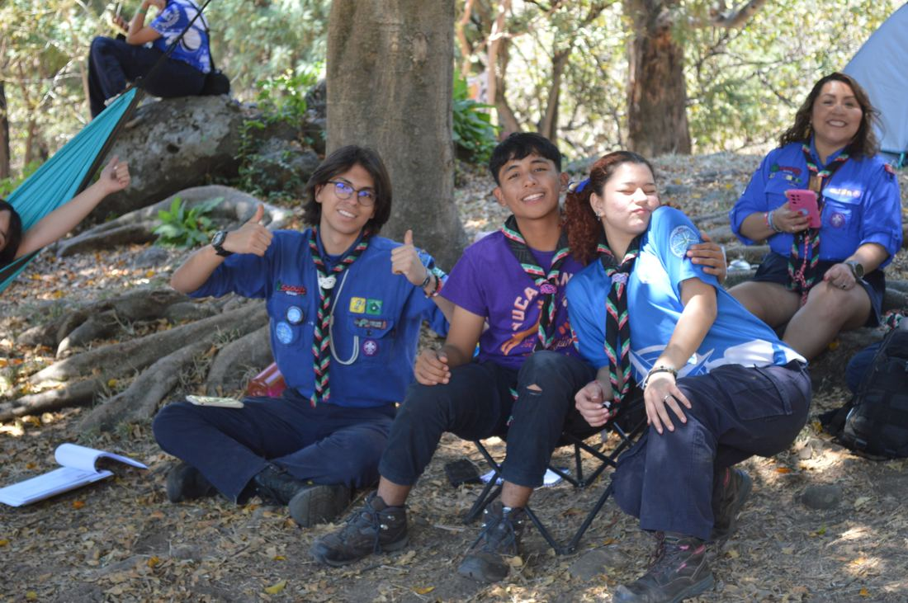
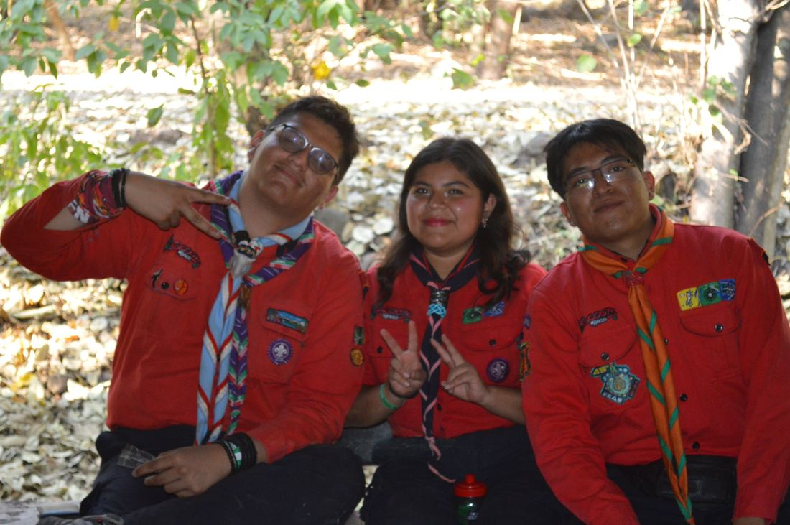
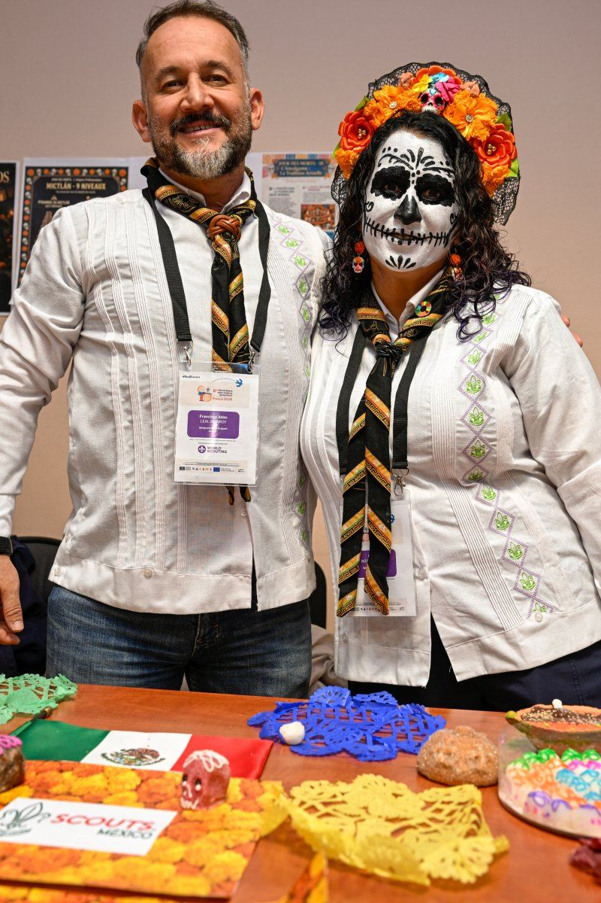
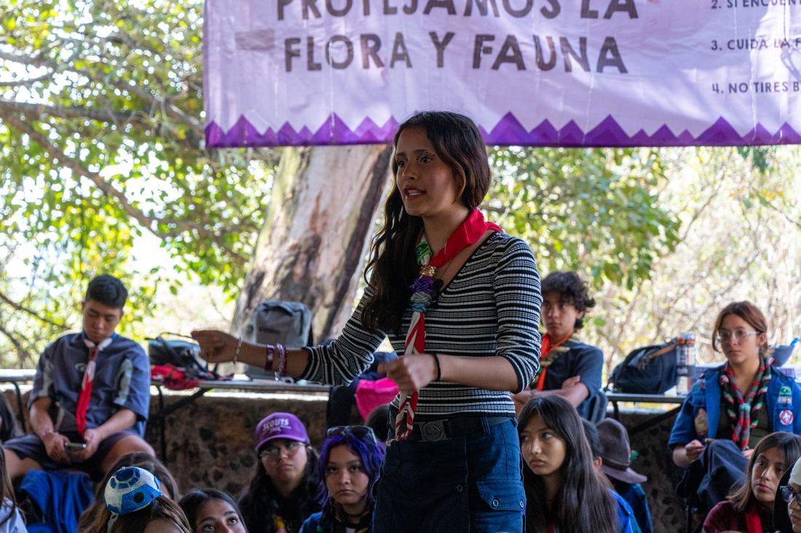
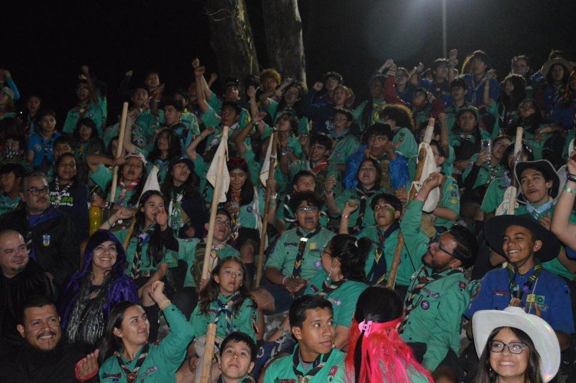
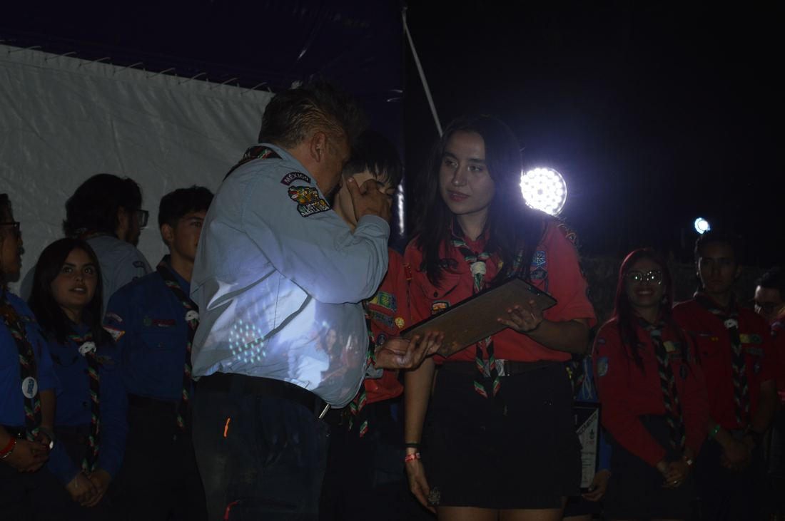

6 a <10 años
«Siempre lo Mejor»
Manada de Lobatos
4 Cazaderos, Aventuras, Especialidades y Progresión Final Alfa Jade y Obsidiana.
Ver documentos de Manada →By Liam
Manuales, 220 fichas FAES, 82 especialidades FES, plantillas RECME, reglamentos y convocatorias vigentes con su fuente exacta. Pensado para todas las secciones y adultos.

Escribe tu duda o toca una pregunta para ver respuesta y fuente oficial.
Cada herramienta tiene su propio espacio limpio para consultar sin distracciones y conservar tus datos locales.
Filtra por sección, colección, eje temático o etiquetas RECME y lee los 883 documentos oficiales (incluyendo 220 FAES y 82 especialidades FES).
Cada bloque se muestra desplegado para consulta inmediata; toca su encabezado o el botón −/+ si prefieres contraerlo o volverlo a abrir.
Más de 700 Grupos en México. Regístrate en SISAS (Cuota 2026: $890 Nuevo / $730 Reingreso o Registro Familiar).
SISAS gestiona membresía y pagos; ExplorApp lleva el avance de NNAJ y CarpetApp valida insignias PJOS.
Campo Escuela Nacional en Tepoztlán, Morelos desde 1956 en terrenos donados por Paul Loewe.
WSJ Polonia 2027 (14–17) y Moot Taiwán 2029 (18–25) cada 4 años, más Jamboree Nacional, Philia y Foros.
El CPRC y el CNRC (Anamari Hernández, Kevin Axel Cantero, Ivone Ramos y Mariana Villamil) coordinan la Red de Caminantes.
Registra tus proyectos en Agentes de Cambio.MX, ExplorApp y sdgs.scout.org con Cédula SMART y Bitácora.
BiblioTech Scout es una plataforma educativa, gratuita y de código abierto creada para acercar de forma rápida, clara y ordenada la documentación oficial vigente de la ASMAC y de World Scouting (WOSM) a scouts de todas las secciones, familias y dirigentes.
Creador: Liam Durán
Sección: Comunidad de Caminantes
Provincia: Tláhuac-Xochimilco
Si detectas algún error, archivo desactualizado, detalle en un documento o respuesta por mejorar, puedes reportarlo al correo rdc.tlxh@gmail.com, usando el botón Reportar dentro del visor, debajo de cada respuesta, en el Editor de Archivos o desde el menú. Estoy trabajando duro y revisando constantemente cada reporte para solucionarlo en aproximadamente 2 a 7 días como máximo.
Plataforma del Comité Nacional de la Red de Caminantes (CNRC) para diseñar, registrar y compartir proyectos de impacto en los 4 Ejes Temáticos.
Sube tu iniciativa (terminada o en curso), conoce lo que hacen otras provincias e inspírate para tu siguiente servicio.
Ya sea que el proyecto esté concluido o apenas a mitad del camino, ¡queremos conocerlo! Al difundir tu iniciativa, no solo conectas con otras provincias, sino que fortaleces la Red de Caminantes con nuevas ideas y perspectivas. Cuéntanos qué hicieron, los retos que superaron y lo que aprendieron en la ruta.
¡Puede ser el motor que impulse el próximo gran cambio de alguien más!
Estos funcionan como una guía teórico-práctica para aplicar los valores del Escultismo y las prioridades de la ASMAC. Su fin último es que los jóvenes alcancen un desarrollo pleno mediante los cuatro pilares de la educación: aprender a ser, aprender a saber, aprender a hacer y aprender a convivir.
Elige una sección para ver sus documentos, progresiones e insignias.
4 Cazaderos, Aventuras, Especialidades y Progresión Final Alfa Jade y Obsidiana.
Ver documentos de Manada →4 Rumbos, Aventuras, Especialidades y Progresión Final Águila Real Jade y Obsidiana.
Ver documentos de Tropa →4 Senderos, proyectos, Red de Caminantes e Insignia Final Everest Jade y Obsidiana.
Ver documentos de Comunidad →
Proyecto Personal de Vida (PPV), 4 Rutas, Aventuras e Insignia Baden-Powell.
Ver documentos de Clan →Política AMS 2024, Formación y Gestión 2025, Insignia de Madera y Corte Nacional de Honor.
Ver documentos de Adultos →
Marco Mundo Mejor (4 programas globales), 26° Jamboree Polonia 2027 y 17° Moot Taiwán 2029.
Ver documentos WOSM →
Campo Escuela Meztitla
Foros Nacionales
EEAS NacionalAccesos directos a tiendas, plataformas oficiales y trámites vigentes 2025–2026. Todas las tarjetas están desplegadas para lectura rápida; toca cualquier encabezado para contraerla.
Compra uniformes, insignias y equipo oficial en tiendaenlinea.scouts.org.mx.
(55) 5208 7122 Ext. 148.Portales oficiales para membresía, cursos de adultos y seguimiento del PJOS.
Cuotas vigentes aprobadas por el Consejo Nacional y cobertura médica en actividades.
JSN 25.136): $730 MXN Reingreso · $890 MXN Nuevo Ingreso.Atención confidencial de quejas o denuncias (A Salvo del Peligro) y mediación de conflictos.
Repositorio colaborativo oficial del método educativo en recme.scouts.org.mx.
Soporte oficial para dudas de cuentas, pagos y plataforma en helpdesk.scouts.org.mx.
Paga de 3 a 5 miembros nucleares en un solo cargo desde familiar.scouts.org.mx.
Comparativa directa entre ediciones anteriores y los documentos oficiales vigentes 2025–2026. Puedes contraer cualquier tarjeta tocando su título.
El PJOS sustituyó al ENPE con Cazaderos, Rumbos, Senderos, Rutas e Insignias Jade/Obsidiana (las insignias ENPE previas siguen siendo portables) junto a ExplorApp y CarpetApp.
Edición vigente aprobada en junio 2026 con nuevas colocaciones PJOS, insignias del Marco Mundo Mejor, Compromiso Ciudadano y camisola outdoor/polo.
Desde julio de 2025 SISAS aplica estrictamente las edades del Reglamento 2023 en Manada, Tropa, Comunidad y Clan sin excepciones automáticas.
Cuota nacional 2026 de $730 MXN (reingreso) y $890 MXN (nuevo ingreso), conservando descuentos de Registro Familiar.
Renovación integral de Estatutos y Reglamento (2023), Política de Diversidad e Inclusión (2024), Código de Conducta y Corte de Honor (2025).
Nuevos modelos AMS 2024 y Formación/Gestión 2025 para dirigentes, además de la identidad oficial del Centenario Scout en México (1926–2026).
Gestión en SISAS, 25 guías oficiales de Help Desk y plazos definidos de registro (45 días inicial, 60 reinscripción, 15 cambios).
Centralización en recme.scouts.org.mx de Especialidades FES (4 Ejes / 17 ODS), guía FAES y formatos unificados P1–P10.
Atención digital confidencial vía conecta.scouts.org.mx y formatos estandarizados de Diálogo, Mediación y Arbitraje.
Comparte qué es imprescindible llevar a un campamento, consejos de vida de sección, ideas para proyectos SMART o experiencias entre Scouters sobre supervisión segura y acompañamiento juvenil.
Elige cualquiera de los 6 archivos editables, llena tus datos directamente sobre el documento oficial de base, autollena en 1 toque con tu Perfil Local, guarda borradores en tu dispositivo y descárgalo listo en PDF oficial, imagen o para imprimir.
Sugerencia para una mejor experiencia: cuando llenes archivos largos o con mucha información (como la Ficha Médica completa de 2 hojas o una Cédula SMART detallada), resulta más cómodo trabajar desde una computadora. Sin embargo, no es obligatorio: puedes llenar, guardar borradores y descargar todos los archivos sin problema también desde tu celular o tablet.
Tipo de sangre, alergias, medicamentos, antecedentes, inmunología y contactos de emergencia listos para campamentos y salidas.
Autorización para salidas, acantonamientos y campamentos con datos del participante, padre/tutor y Scouter responsable.
Llenado guiado de fichas FES (4 Ejes y 17 ODS), nivel, sinodal/asesor, objetivos de aprendizaje y evidencias logradas.
Cédula para Agentes de Cambio.MX, Tribu de la Tierra, Campeones de la Naturaleza, Mensajeros de la Paz, Jade y Obsidiana.
Convocatoria de evento, horarios, sede, objetivos educativos, lista de equipo indispensable y cronograma por bloques.
Actas de Consejo de Grupo, Corte de Honor, Asamblea de Comunidad, Consejo de Clan o acuerdos de Diálogo Directo.
Al igual que tus documentos marcados y notas, estos datos se guardan únicamente en el almacenamiento local de este dispositivo (nunca se envían a internet por sí solos). Sirven para rellenar tus formatos oficiales en 1 clic y autocompletar tu registro en La Fogata.
Filtra por categoría, eje o subcategoría, sección, etiqueta RECME o formato para leer o descargar.
No es necesario descargar nada: puedes disfrutar de todas las herramientas, el buscador de 14,832 preguntas, los 883 documentos (incluyendo 220 FAES y 82 FES) y el Editor de Archivos directamente desde tu navegador. Si quieres consultar archivos sin conexión (offline), elige la opción para tu teléfono:
Aplicación segura y de código abierto. Está compilada desde el repositorio público de BiblioTech Scout y firmada con la clave oficial del proyecto. Al analizarla con Play Protect normalmente no marca ningún riesgo ni debería salir otra advertencia adicional.
Descarga el APK. Pulsa el botón y espera a que termine la descarga en tu navegador.
Permite la instalación. Abre el archivo desde las notificaciones o la carpeta Descargas. Si Android lo pide, permite instalar apps desde tu navegador.
Instala y abre. Pulsa Instalar. Si ya tenías la app, instala encima para conservar tus archivos y descargas.
Android solo pregunta al instalar fuera de Play Store. Pulsa Analizar app para que la verifique (ya revisada no debería saltar ninguna alerta); y si llegara a mostrarse un aviso preventivo, toca Más detalles → Instalar de todos modos. Descarga únicamente desde este enlace oficial.
La app actualiza contenido e interfaz automáticamente cuando tienes internet. Para instalar una versión nueva del APK, vuelve aquí e instala encima sin desinstalar la versión anterior para conservar tus archivos.
Mejora continua BiblioTech Scout evoluciona constantemente gracias a toda la comunidad. Si encuentras un error en respuestas, formatos, La Fogata, guías, documentos, la página web o la App APK, o quieres aportar un documento oficial, escríbenos a rdc.tlxh@gmail.com o manda un reporte: estoy trabajando duro revisando cada aviso para dejarlo solucionado en aprox. 2 a 7 días como máximo.